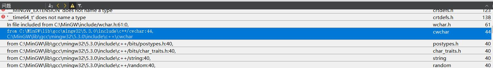
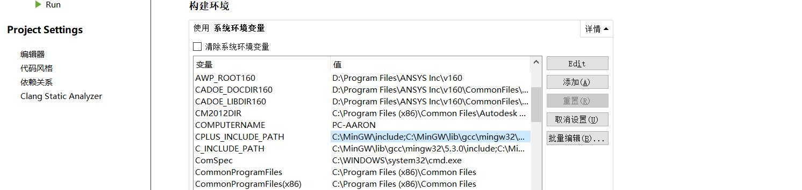
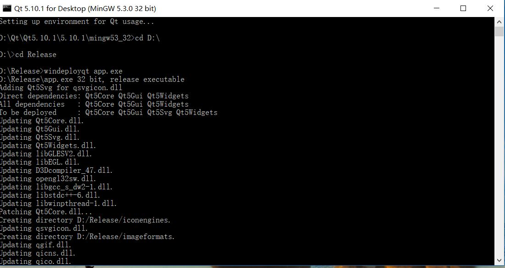

Last update: 2018-06-12 16:35
back to index目录：
如果你的电脑没有装过MinGW，那么在安装完QT Creator后，QT会自动给我们配置好所有设置。
但是有时候，我们因为各种原因手动改了环境变量，或者安装了其他版本的MinGW，就有可能导致QT Creator在编译的时候，调用了
错误的库，从而出现各种奇怪的错误。
笔者最近为了编译vtk，不小心把环境变量改了，导致QT使用MinGW编译出错，必须重新手动配置环境变量。在此记录我的配置方法。
首先新建一个环境变量，用来保存MinGW的安装目录。这样下次我们安装了更高版本的MinGW时，可以快速地更新。
MINGW_PATH = D:\Qt\Qt5.10.1\Tools\mingw530_32
然后，分别配置系统的PATH、LIBRARY_PATH、C_INCLUDE_PATH、CPLUS_INCLUDE_PATH。注意，如果系统已经存在这些环境变量， 请打分号追加，以免覆盖原有导致其他软件不能正常使用。
PATH = %MINGW_PATH%\bin;%MINGW_PATH%\libexec\gcc\i686-w64-mingw32\5.3.0
LIBRARY_PATH = %MINGW_PATH%\lib;%MINGW_PATH%\lib\gcc\i686-w64-mingw32\5.3.0
C_INCLUDE_PATH = %MINGW_PATH%\include;%MINGW_PATH%\lib\gcc\i686-w64-mingw32\5.3.0\include
CPLUS_INCLUDE_PATH = %MINGW_PATH%\include;%MINGW_PATH%\lib\gcc\i686-w64-mingw32\5.3.0\include
这里C_INCLUDE_PATH和CPLUS_INCLUDE_PATH的值是一样的，原因是新的MinGW已经没有C++目录了。
至此，环境变量配置完成，下次创建QT应用程序时，就可以正常使用MinGW编译器了。
笔者从别的地方拿来来一个QT程序，试图在自己的QT环境下用MinGW编译，结果发现编译出错。明明检查过环境变量了，问题到底出在哪？

折腾了很久，最终发现，QT Creator没有纠正该项目的构建环境，构建环境的值还是原来的值，与笔者的环境不一致。

于是笔者按照1.1的设置方法， 在项目的构建环境里面重新设置了系统环境变量，问题终于得以解决。
实际上，还有一种快捷的设置方法可以解决这个问题，就是勾上“清除环境变量”，然后在取消勾选，QT Creator就是再次读取系统环境变量完成设置。”
Qt 官方开发环境使用的动态链接库方式，在发布生成的exe程序时，需要复制一大堆 dll，如果自己去复制dll，很可能丢三落四， 导致exe在别的电脑里无法正常运行。因此 Qt 官方开发环境里自带了一个工具：windeployqt.exe。以官方 Qt 5.10.1+MinGW 开发环境为例:
1) 从开始菜单找到qt命令行Qt 5.10.1 for Desktop (MinGW 5.3.0 32 bit)
2) cd到目标exe的目录，如D:\Release
3) 然后使用windeployqt工具命令:
windeployqt app.exe
之后就可以看见windeployqt 工具自动复制的插件文件夹和dll文件、qm文件。这时候得到的就完整的可执行程序发布集合，依赖关系都解决好了。

If, however, you're unhappy with something, please remind me: tangyulong202@126.com. Your opinions would help me a lot!
Yours Sincerely,
Aaron